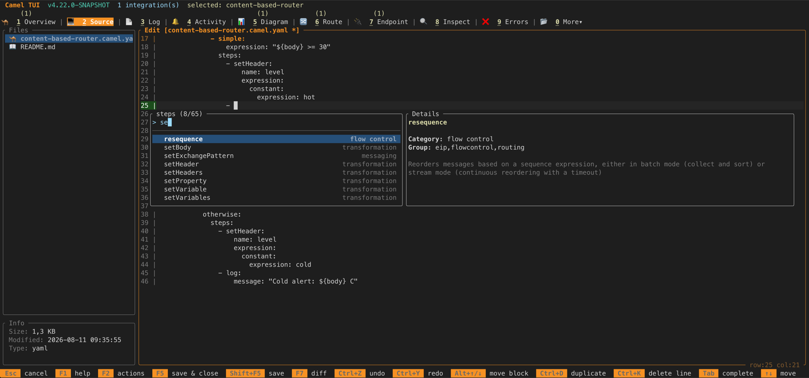
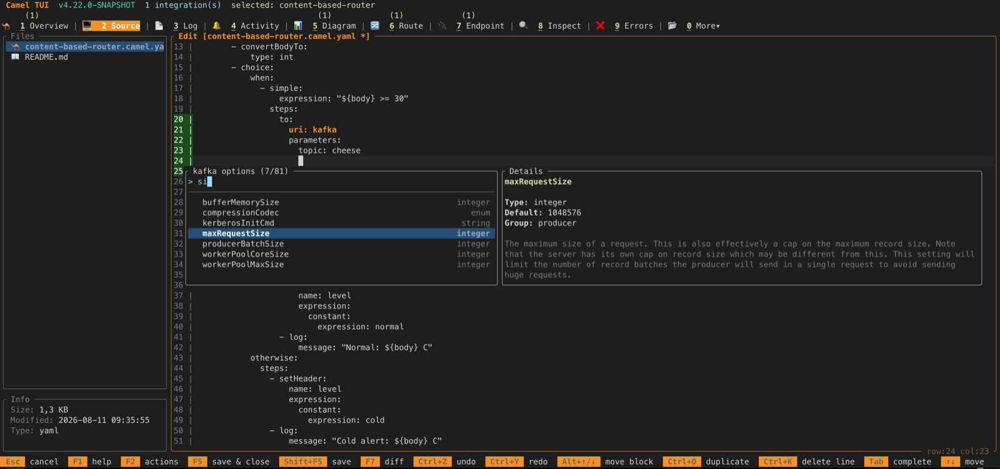
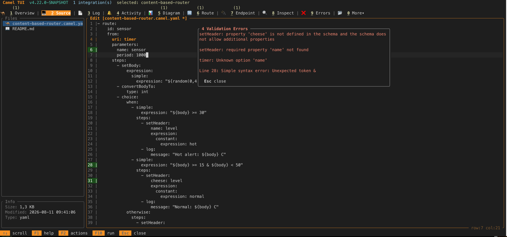
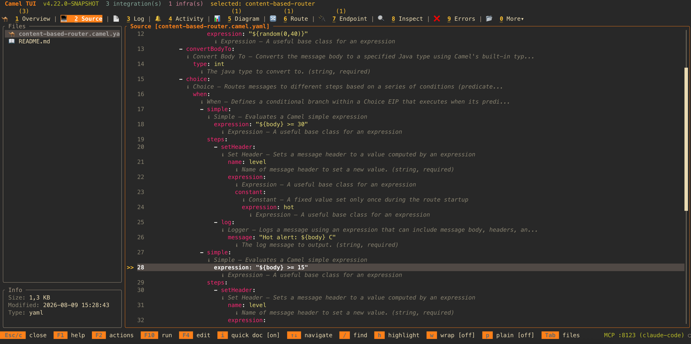
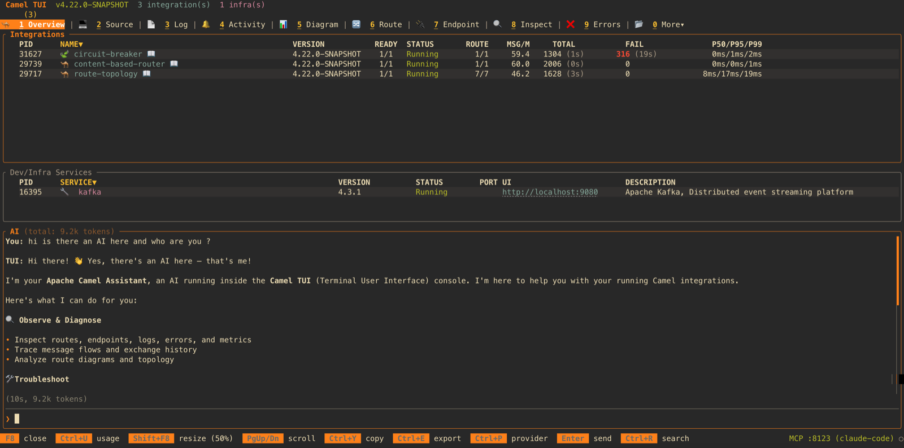

Two weeks ago we introduced the Camel TUI – a terminal dashboard for monitoring and managing Apache Camel integrations. Since then, development has continued at a rapid pace. This post covers the latest additions landing in Camel 4.22.
Open Any Project
You can now launch the TUI directly from any existing Camel project – Spring Boot, Quarkus, or Camel Main – by pointing it at the project directory:
camel tui .
The TUI detects the project type from pom.xml, opens it, runs it (via F10), and gives you the full dashboard experience for troubleshooting or light development. No extra setup, no plugins to install – just point the TUI at your project and go.
A Low-Code YAML Editor
The biggest addition is a built-in source editor in the Source tab. What started as a read-only source viewer with inline documentation has evolved into a mini low-code editor for Camel YAML DSL routes and application.properties files.
The editor is designed for prototyping and quick edits – sketching out a new route, tweaking an endpoint option, or experimenting with an EIP pattern while your application is running. It is not intended to replace a full IDE for project-based development. If you are looking for a graphical UI development experience, check out Kaoto or Karavan.
Tab Completion
Press Tab anywhere in a YAML route file, and the editor offers context-aware completions:


- EIP names –
choice,split,aggregate,filter, and all other EIPs. The autocomplete popup shows the EIP category label (routing, transformation, error handling, etc.) to help you pick the right one. - EIP options – After selecting an EIP, Tab again to see its available options with placeholder values.
- Component names – Type a
to:orfrom:URI and Tab to browse all available components. - Endpoint options – After the component name, Tab to see the endpoint’s query parameters.
- Expressions and data formats – Tab completion for expression languages (
simple,jsonpath,xpath, etc.) and data format options (json-jackson,csv,avro, etc.). application.properties– Tab completion forcamel.*configuration keys, including Spring Boot configuration metadata when available.
The completion engine is tree-driven, generated from the canonical YAML DSL schema and the Camel catalog metadata. It understands the nesting structure of the YAML DSL, so completions are scoped to where you are in the document – you only see options that are valid at the current cursor position.
Validate on Save
When you save a file (Ctrl+S), the editor validates the content:
- YAML route files are validated against the Camel YAML DSL schema. Errors are shown in a popup with the line number and description.

application.propertiesfiles have theircamel.*keys validated against the catalog, catching typos in property names.
Editor Features
The editor also includes:
- Inline quick docs – press
ito toggle inline documentation for the component or EIP under the cursor.

- Cross-route navigation – jump indicators show where routes connect to each other (via
direct,seda, etc.), and you can jump between them. - Go to route – press
gto open a type-ahead popup listing all routes in the file, letting you quickly jump to any route by name. - Confirm before discard – pressing Esc with unsaved changes prompts for confirmation.
- Row:col indicator in the status bar so you know where you are.
- Plain mode (toggle with a key) strips syntax coloring and expands the panel to full width without border lines, for easy multi-line copy/paste.
The combination of Tab completion, validation, and inline docs means you can write and iterate on Camel routes without leaving the terminal – a low-code experience for the command line.
AI Panel: Bring Your Own LLM
The F8 AI prompt panel now supports a wide range of LLM providers:
- Anthropic (Claude) – auto-detected when
ANTHROPIC_API_KEYis set, including Vertex AI. - Azure OpenAI – auto-detected when
AZURE_OPENAI_API_KEYandAZURE_OPENAI_ENDPOINTare set. - Google Gemini – auto-detected when
GEMINI_API_KEYis set. - OpenAI (and any OpenAI-compatible API) – when
OPENAI_API_KEYis set. Works with any provider that implements the OpenAI API (Groq, Together, etc.) by setting a custom URL. - IBM watsonx.ai – auto-detected when
WATSONX_API_KEYandWATSONX_PROJECT_IDare set. - Ollama – for local models, auto-detected when Ollama is running on localhost.

The panel auto-detects which provider to use based on your environment variables, so you just set the key and start chatting. You can also switch providers on the fly from within the panel. Token usage is tracked per conversation.
The TUI also comes with a built-in MCP server, so any external AI coding assistant (Claude Code, Cursor, Windsurf, etc.) can connect to the TUI and observe, interact with, and control your running Camel application from the outside – reading routes, errors, traces, sending messages, stopping routes, and more.
Other Improvements
A few more additions since the intro blog:
- HTTP probe – A lightweight Postman-like tool for sending HTTP requests to your running application’s endpoints, directly from the TUI.
- Secrets tab – Browse secrets from configured vault providers (AWS, Azure, GCP, HashiCorp, CyberArk).
- JFR tab – View Java Flight Recorder runtime events (route, processor, exchange) when JFR instrumentation is enabled.
- Clickable hyperlinks – URLs in the HTTP tab and infrastructure service console URLs are now clickable hyperlinks in terminals that support them.
- Destructive action confirmations – Actions like “Stop All” now prompt for confirmation, configurable in the Settings dialog.
Try It
All of this ships in Apache Camel 4.22. Install the Camel CLI and try it:
curl -fsSL https://camel.apache.org/install.sh | sh
camel run myRoute.yaml --dev
Then in another terminal:
camel tui
Navigate to the Source tab, open a YAML file, and press Tab to see the completion in action.
Roadmap
The TUI is actively developed and will continue to receive improvements and new features in upcoming Camel releases. Stay tuned!
About the Screenshots
The screenshots in this blog post were captured entirely by an AI agent (Claude Code) connected to the running TUI via its built-in MCP server. The agent navigated the TUI, opened files, entered the editor, triggered Tab completion, saved with intentional errors, toggled quick docs, and opened the AI panel – all through MCP tool calls, without any human interaction with the terminal.